動手前，
先在數位環境練熟。
本平台提供一系列互動式工具操作模擬，協助學生在實作教室前先建立正確的操作概念、安全意識與肌肉記憶。每個工具都採五段式闖關設計，從認識到創作，循序漸進。
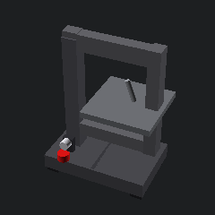
全部 25 個主題一覽
點任一主題直接進入；或用下方分類逐區瀏覽
學習路徑建議
箭頭代表「先學這個會比較順」，不是硬性規定
機具安全與操作
進實作教室前先在數位環境熟悉結構、安全規範與操作步驟
用模擬把第一次切的緊張留在電腦裡。從認識結構、安全規範、操作步驟，到模擬切割（5 個關卡）與創作挑戰，學生在進實作教室前就能熟悉線鋸機。
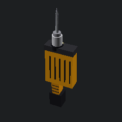
課本 2 上 K0 的第二種電動機具。從認識扳機/扭力環/夾頭/鑽頭 8 部件，到 10 題安全闖關、8 步驟鑽孔流程、5 種材料 × 3 種鑽頭模擬器、8 種鑽孔故障圖鑑。
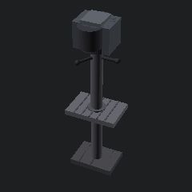
課本 2 上 K0 的第三種電動機具。固定式鑽孔的代表，垂直保證好、皮帶 5 段變速、適合大直徑與精準孔。模擬器以 SFM 公式（業界標準）算切削速度，學生選錯轉速會看到燒孔。

課本 2 上 K0 的第四種電動機具。涵蓋帶式 + 盤式雙機種。從 60–320 號粒度選擇、靠尺支撐、集塵連接到「粉塵爆炸」防範，這是 5 機具中最易被忽視風險的一個。
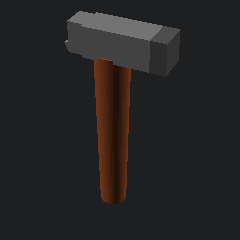
1 上 K3 挑戰 3「處處可見的工具」。10 種手工具（鎚子/螺絲起子/鋸子/銼刀/鉗子/扳手/量測/刀具/夾具/衝具）+ 10 題安全闖關 + 8 步使用通則 + 10 題任務選工具測驗 + 8 大保養項目 + 5 題報廢判斷。手機架/微型椅/防撞車所有實作前置。
設計與製造
從畫得出來到做得出來：製圖、建模、數位製造
切不斷、燒焦、起火，差別只在速度與功率兩個數字。從 CO₂ 雷射原理與禁用材料（PVC 會產生氯化氫）、RDWorks 八步驟流程、圖層與三種加工方式，到可以真的「試切」的參數模擬器——在浪費真材料之前先建立直覺。附珩宇老師實機操作與保養影片。
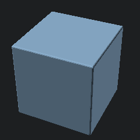
1 上 K3 挑戰 1「無所不在的視圖與製圖」。第三角投影法 + 6 個概念 + 4 種視圖類型比較 + 8 步繪製流程 + 6 種 3D 物件 ↔ 三視圖即時模擬器 + 8 題判讀挑戰。Onshape CAD 課程前置技能。
3 上 K2 產品設計整章。設計思考 5 階段（同理→定義→發想→原型→測試）+ 6 種市場調查方法 + 9 個發想工具（SCAMPER/HMW/6 思考帽）+ Pugh 決策矩陣互動模擬 + iPhone/Tesla/Airbnb 等 8 個改變世界的設計案例。
業界第一個全雲端 CAD。瀏覽器即用、教育版免費、可即時協作。搭配珩宇老師 9 集 YouTube 教學課程，從草圖到 4 種建模方法（擠出/旋轉/薄殼/疊層拉伸）、組裝與機構運動模擬。是 3D 列印與 FRC 設計的前置技能。
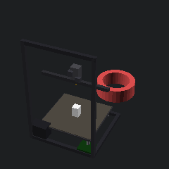
從 STL 到實體看懂每一層的累積。認識機構、調整切片參數（層厚、密度、速度、溫度），即時預覽列印效果與預估耗時，對照 8 種常見故障。
機構與結構
力怎麼傳遞、結構為什麼不會垮
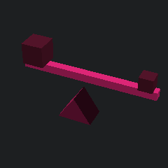
1 下關卡 4 機械原理。6 種簡單機械（槓桿/滑輪/輪軸/斜面/楔形/螺旋）+ 槓桿三類分類 + MA 計算 6 題練習 + 三合一模擬器（槓桿/滑輪/斜面）+ 12 件日常物品分析。
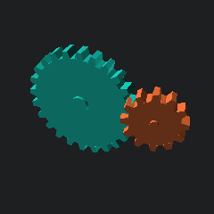
1 下 K4 挑戰 5 + 課本附件 3-5。6 種機構（曲柄滑塊/凸輪/齒輪/四連桿/棘輪/皮帶）含 SVG 動畫 + 4 種運動類型分類 + 創意機構卡片製作 + 三合一動畫模擬器（曲柄滑塊/凸輪/齒輪即時運動）+ 10 種生活機構分析。
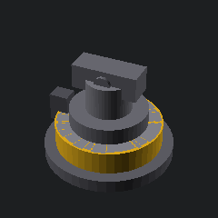
2 下 K5 統整創作。帕斯卡定律 + 油壓缸 + 機械利益 + 靜壓傳動 4 大原理 + 4 軸液壓手臂（基座/大臂/小臂/夾爪）結構 + 翰林附件 3 紙模製作 8 步 + Canvas 4 軸控制模擬器（搬瓶子任務）+ 8 種工業液壓應用。
真實 FEM 直接剛度法求解器，讓每根桿件的張力（藍）、壓力（紅）都有數學根據。5 種橋型 + 自由設計 + Matter.js 崩塌動畫 + 6 道負載情境 + 8 件歷史失敗案例。年級自適應（七至九年級・教師）。
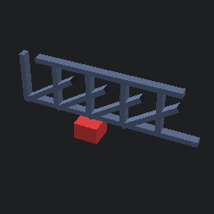
1 下關卡 4「結構與機構」核心。3 種桁架型式（Pratt/Warren/Howe）可選，加荷重看紅張藍壓即時受力。含紙拖鞋承重、紙橋負重、結構塔三大經典挑戰指南 + 8 種失效模式（挫屈/剪切/彎矩/疲勞...）。
能源與動力
能量從哪裡來、如何變成運動
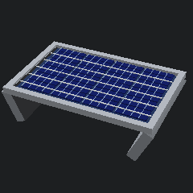
2 上 K1+K3 認識能源整章。5 種能源（化石/核能/太陽能/風力/水力）+ 6 種能量形式 + 8 步發電鏈 + 5 種發電方式效率比較 + 家庭用電試算（夏季電價級距 + CO₂ + 種樹換算）+ 10 招節能。
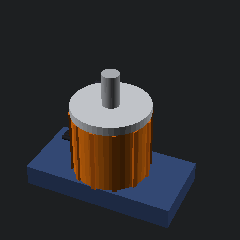
2 下 K4+K6 動力運輸整章。4 種動力系統（內燃機/電動機/燃料電池/液壓）+ 陸海空 3 大運輸分類 + 太陽能動力車 8 步製作流程 + 4 種車輛 × 5 動力源效率/碳排模擬器 + 運輸對社會與環境 10 議題分析。
電子與控制
接得起來、會思考、能動作
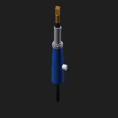
讓學生第一次焊接就焊出飽滿的焊點。從認識烙鐵、安全規範、焊接步驟，到模擬焊接（5 種焊點類型）與焊點品質鑑定（9 種錯誤對照）。

從一顆 LED 開始讓電流可視化。認識電源軌、行/列、跳線；闖關修正 5 種電路故障（缺電阻、LED 反接、電源軌斷點、並聯、開關）。
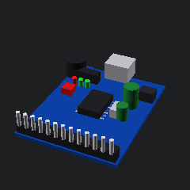
3 下 K4 + 統整專題。3 大平台比較（Arduino/micro:bit/ESP32）+ 數位/類比訊號 + 8 種感測器 + Arduino 8 範例程式 + 虛擬電路模擬器（LED/按鈕/避障）+ 創意公仔燈 + 清掃機器人案例。
專題實作
把零件組成一個會自己動的系統
把麵包板與微控制器學到的零件，第一次組成一個會自己動的系統。核心是可以真的跑起來的循跡車 PD 調校模擬器——含馬達響應延遲與轉速上限，所以「參數越大越好」不成立：想跑快就必須自己發現微分項。另有感測器二值化、超音波盲區、整車除錯與完賽檢核表。

全球最大高中機器人競賽。認識機器人結構（8 子系統）、隊伍分工、工程設計流程（7 階段）、機器人策略配置、工程筆記範本與 FRC 6 大獎項評鑑。參考 Team 254（5 屆世界冠軍）、Citrus Circuits 1678 的公開資源。
新興科技與跨領域
看得懂新科技，也接得回數學與科學
AI 為什麼會認錯？門檻設在哪裡才合理？新興科技最怕變成名詞背誦，這裡全部做成可以動手改參數的模擬器：調光線與遮擋看信心分數崩掉、拉門檻算出每天誤擋幾人、比較四種實境、跑一天的智慧節能模擬。技術與倫理綁在一起談。
科技一直站在數學與科學上。零硬體、純操作的四個模組：翻位元湊數字並試出同位檢查抓不到的錯誤、單步看三種排序怎麼比怎麼換、調泛音配方聽出音色差異、拖動物距即時畫出透鏡光路——放大鏡、相機、投影機其實是同一條公式。
用 Blender 依物理公式計算、烘焙成的力學模擬動畫。重力與彈跳(能量損失)、拋體運動(角度與射程)、單擺(等時性)、等速圓周運動(向心)——每段自動循環播放,從動畫體會抽象的力學概念。
五段式教學設計
每個工具都依此架構設計，讓學生循序漸進
互動標示工具部位，理解每個元件的功能。
必修闖關，須滿分才能進入操作。情境題與服儀檢查。
分解動作為 8 個步驟，每步都有動畫與重點提醒。
核心模組。互動式模擬器，5 個關卡與評分。
創作挑戰或品質鑑定，把學到的內容延伸到實際作品。
為什麼需要數位前置？
實作教室時間有限，數位模擬讓有限時間發揮最大價值
第一次操作高溫、利刃機具壓力大，數位模擬讓肌肉記憶先建立。
50 分鐘的課讓每位學生都有機會多次練習，不用排隊等機台。
切割路徑、焊接時間、電流方向的因果關係，用視覺化方式內化。
偏移量、安全動作、焊點品質自動評分，老師可追蹤每位學生進度。
教師後台
查看學生進度、彙整班級成績、下載教學資源
準備好開始了嗎？
選一個工具，從認識結構開始，闖關直到能獨立完成創作。所有進度自動儲存於瀏覽器，下次回來可以接著學。
選擇工具 →給教師的話
本系列工具對應 108 課綱科技領域生活科技學習內容「生 P-IV-3 手工具的操作與使用」「生 P-IV-6 常用的機具操作與使用」與學習表現「設 c-IV-1 運用設計流程實作解決問題」，可作為實體實作課的數位前置教材。建議排課方式（詳見教師後台 → 教學資源）：
單元 1（4 節）：認識與安全
- 第 1 節：模組 1 + 模組 2（必滿分通關）
- 第 2 節：模組 3 操作步驟 + 課堂演示
- 第 3 節：模組 4 模擬練習，課末測驗
- 第 4 節：實體機具操作（從風險最低的工具開始）
單元 2（2–3 節）：應用與創作
- 模組 5（創作 / 故障排除）+ 個人或小組創作專題
- 成果展示與互評
本平台以 GitHub Pages 免費部署，學生只要瀏覽器網址即可使用，不需要安裝任何 App。
意見回饋
歡迎老師與同學分享使用心得，幫助我們持續改善平台！